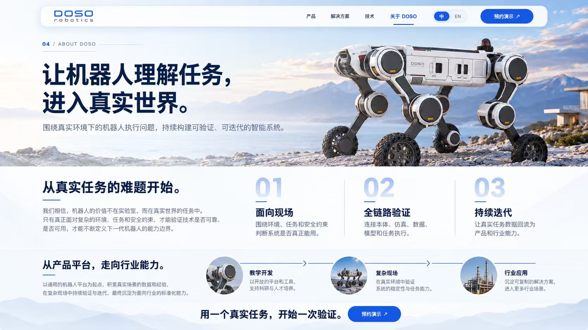

Field first
Judge usability against environment, task and safety requirements.

04 / ABOUT DOSO
Build verifiable, iterative intelligent systems around robot execution in real environments.
We believe a robot’s value lies in real-world tasks. Only by facing complex environments, tasks and safety constraints can we validate reliability and continuously define the capabilities of the next generation.
Judge usability against environment, task and safety requirements.
Connect hardware, simulation, data, models and execution.
Turn real task data into better products and industry capabilities.
Start with a general robot platform. Build experience in real scenarios and iteratively validate capabilities for industry.
Open tools for research and education.
Validate reliability and execution in the field.
Develop repeatable solutions for more industries.